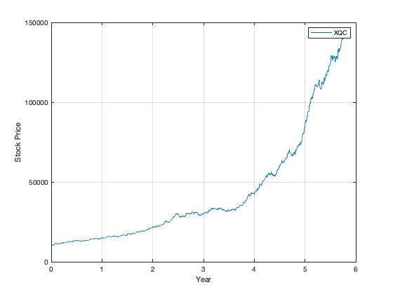
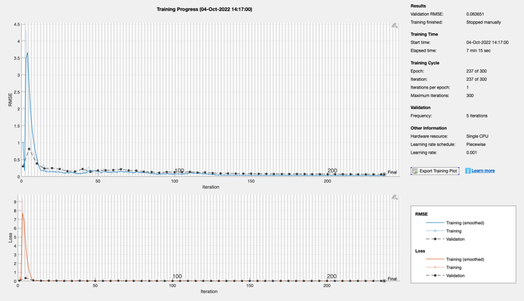
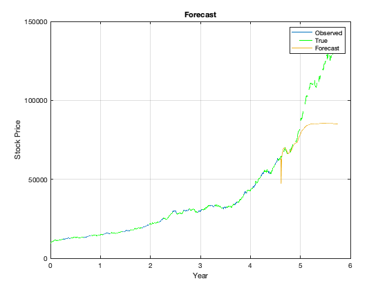

Script using LSTM to predict stock prices
Contents
See also:
lstmLayer, sequenceInputLayer, fullyConnectedLayer, regressionLayer, trainingOptions, trainNetwork, predictAndUpdateState
% Rest the random number generator so we always get the same case rng('default') layerSet = 'two lstm'; % 'lstm' 'bilstm' and 'two lstm' are available
Generate the stock market example
n = 1448; tEnd = 5.75; d = StockMarket( 1, 8000, 3000, tEnd, n ); s = StockPrice( d.s0, d.r, d.sigma, tEnd, n ); t = linspace(0,tEnd,n+1); PlotStock(t,s,d.symb);
Divide into training and testing data
n = length(s); nTrain = floor(0.8*n); sTrain = s(1:nTrain); sTest = s(nTrain+1:n); sVal = sTest; % Normalize the training data mu = mean(sTrain); sigma = std(sTrain); sTrainNorm = (sTrain-mu)/sigma; % normalize the data to zero mean % Normalize the test data sTestNorm = (sTest - mu) / sigma; sTest = sTestNorm(1:end-1);
Set up and train the neural net
% We are training the LSTM using the previous step xTrain = sTrainNorm(1:end-1); yTrain = sTrainNorm(2:end); % Validation data muVal = mean(sVal); % Must normalize over just this data sigmaVal = std(sVal); sValNorm = (sVal-muVal)/sigmaVal; xVal = sValNorm(1:end-1); yVal = sValNorm(2:end); numFeatures = 1; numResponses = 1; numHiddenUnits = 200; switch layerSet case 'lstm' layers = [sequenceInputLayer(numFeatures) lstmLayer(numHiddenUnits) fullyConnectedLayer(numResponses) regressionLayer]; case 'bilstm' layers = [sequenceInputLayer(numFeatures) bilstmLayer(numHiddenUnits) fullyConnectedLayer(numResponses) regressionLayer]; case 'two lstm' layers = [sequenceInputLayer(numFeatures) lstmLayer(numHiddenUnits) reluLayer lstmLayer(numHiddenUnits) fullyConnectedLayer(numResponses) regressionLayer]; otherwise error('Only 3 sets of layers are available'); end analyzeNetwork(layers); options = trainingOptions('adam', ... 'MaxEpochs',300, ... 'ExecutionEnvironment','auto',... 'GradientThreshold',1, ... 'InitialLearnRate',0.005, ... 'LearnRateSchedule','piecewise', ... 'LearnRateDropPeriod',125, ... 'LearnRateDropFactor',0.2, ... 'Shuffle','every-epoch', ... 'ValidationData',{xVal,yVal}, ... 'ValidationFrequency',5, ... 'Verbose',0, ... 'Plots','training-progress'); net = trainNetwork(xTrain,yTrain,layers,options);
Demonstrate the neural net
yPred = predict(net,sTest); yPred(1) = yTrain(end-1); yPred(2) = yTrain(end); yPred = sigma*yPred + mu;
Plot the prediction
NewFigure('Stock prediction') plot(t(1:nTrain-1),sTrain(1:end-1)); hold on plot(t,s,'--g'); grid on hold on k = nTrain+1:n; plot(t(k),[s(nTrain) yPred],'-') xlabel("Year") ylabel("Stock Price") title("Forecast") legend(["Observed" "True" "Forecast"]) % Format the ticks yT = get(gca,'YTick'); yTL = cell(1,length(yT)); for k = 1:length(yT) yTL{k} = sprintf('%5.0f',yT(k)); end set(gca,'YTickLabel', yTL)
ans =
Figure (9: Stock prediction) with properties:
Number: 9
Name: 'Stock prediction'
Color: [0.94 0.94 0.94]
Position: [560 528 560 420]
Units: 'pixels'
Use GET to show all properties
 Copyright
Copyright (c) 2019 Princeton Satellite Systems, Inc. All rights reserved.